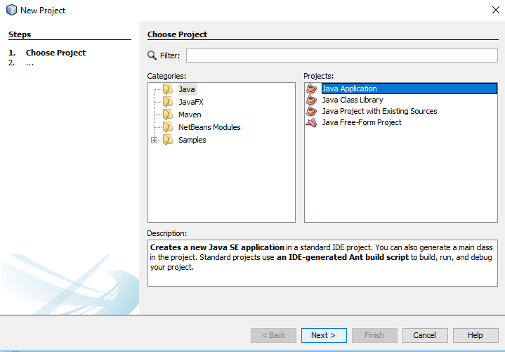

Software Environment
We will be using the Java programming language in this class. The purpose of the class is not to become an expert in Java, but rather to use Java in the service of learning about other topics in computer science. To make this as easy as possible, we will start with an Integrated Development Environment (IDE) known as Neatbeans, which will make it easy to organize your projects and to run the code you write. It also has some nice tools to help you debug. Please visit this link to download Netbeans with Java for your appropriate operating system. Most windows and Linux users will want the x64 download. Please post on Microsoft Teams if you are having any issues installing or running Netbeans. A few notes to help you:
- You will need to allow the installer to make changes to your computer (the software is safe).
- It is fine to use the default location for NetBeans and the JDK.
NOTE: You may also use Eclipse, IntelliJ Idea, or the terminal (javac and java) if you are more comfortable with them, but the default option is Netbeans, and we will be working through examples in class and in labs with Netbeans.
Instructions for Creating NetBeans Projects And JUnit Tests
To create a new project, first select File->New Project
Then, select type "Java Application" and click Next
Choose a location and a name for the project. You can uncheck the "Create Main Class" box unless, you want a file with an automatically generated file that runs when you click the play button for this project. But we're going to start from scratch in this example without a main

Once the project has been created, you can make a new class by right clicking on default projects and clicking New->Java Class. This will create a new Java file with the name of the class you've chosen
Starting a new class like this without a package that you've chosen will create a completely empty class definition. We have to add some methods to it ourselves, including a main if we want it to do something when we right click on it and type "run." For now, we'll add a public static method that returns true if an integer is even and false otherwise:
Let's say we want to test this method we just wrote with JUnit. Right click on the class file, then choose Tools -> Create/Update tests

Then, check/uncheck the following boxes
This will create a new file for testing with an example test method for each method you created in your original class. You should be careful to comment out or delete the fail line at the end of the test, and be sure that your inputs and expected outputs are the expected behavior of your method. Once you've done this, you can right click on this file and click run, and the results of the test will be shown in a window:

Exporting To Zip
If you want to export your whole project to a zip, go to File->Export Project->To ZIP